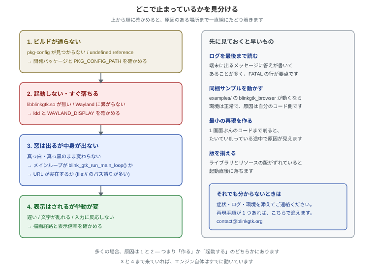
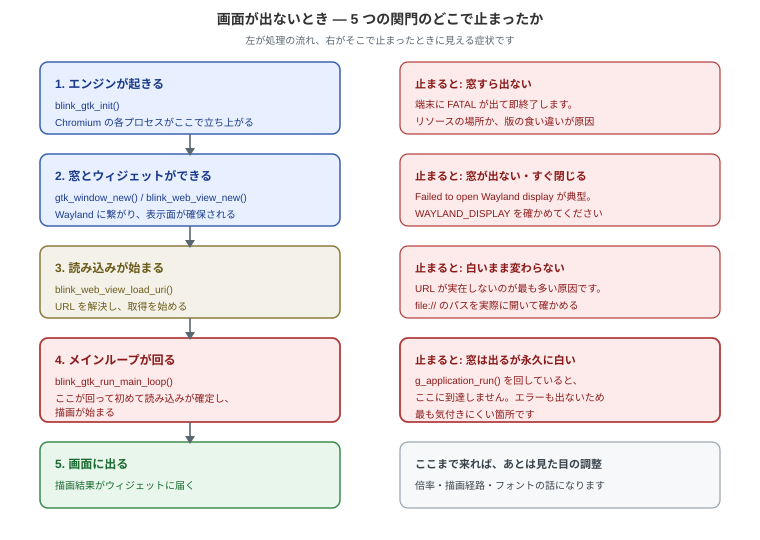

作成者: BlinkGTK Project
バージョン: 1.2.0-build5
うまくいかないときのためのページです。症状から引けるように並べてあります。
ここに載っていない症状に出会われたら、お知らせください。再現手順が
1 つあれば追いかけられます。連絡先はこのページの末尾にあります。

図 1: 切り分けの順序 上から順に確かめると、原因のある層まで一直線にたどり着きます。
原因を探す前に、この 3 つで多くが片付きます。
1. ログを最後まで読む
端末に出るメッセージに答えが書いてあることが多いです。とくに
FATAL の行が
要点です。長くても、最後まで目を通してみてください。
2. 同梱のサンプルを動かす
配布物の examples/ にある blinkgtk_browser
が動くかどうかで、切り分けが
一気に進みます。
cd /usr/share/doc/blinkgtk-0.1/examples
make
./blinkgtk_browser https://example.com/これが動けば、環境は正常です。原因はご自分のコード側にあります。
動かなければ、環境の側です。
3. 最小の再現を作る
1
画面ぶんのコードまで削ってみてください。削っている途中で原因が見えることが
よくあります。それでも再現するなら、そのコードをそのまま送っていただければ
こちらで追えます。
いちばん多いご相談です。窓は出るのに中身が白いまま、あるいは黒いまま。

図 2: 5 つの関門 どこで止まったかによって、見える症状が変わります。
これが圧倒的に多い原因です。
GtkApplication を使う書き方をすると、つい
こう書いてしまいます。
/* これでは画面が出ません */
return g_application_run(G_APPLICATION(app), argc, argv);g_application_run() は GTK
のループを回しますが、Chromium 側のループを
回しません。読み込みが確定しないので、いつまでも白いままです。
厄介なのは、コンパイルも起動も通ってしまうことです。エラーも警告も出ません。
/* こちらを回してください */
return blink_gtk_run_main_loop();GtkApplication
と組み合わせる場合は、activate で窓を出したあとに
blink_gtk_run_main_loop() を回します。書き方は
アプリに組み込むにあります。
次に多い原因です。とくに file:// のパス誤りです。
blink_web_view_load_uri(view, "file:///home/you/test.html");このパスを、ふつうのブラウザのアドレス欄に貼って開いてみてください。開けなければ
BlinkGTK でも開けません。
data: URL を使うときは、#
を含めないようにご注意ください。# 以降は
フラグメントとして扱われ、それより後ろが切り落とされます。CSS
の色指定
#ffe を書いてしまうと、そこから先の HTML
がまるごと消えます。
/* 切れてしまう */
"data:text/html,<body style='background:#ffe'>..."
/* どちらかにする */
"data:text/html,<body style='background:rgb(255,255,238)'>..."
"data:text/html,<body style='background:%23ffe'>..."環境変数 BLINKGTK_GPU_MODE
で描画経路を切り替えられます。既定のままで
出ないときは、別の経路を試してみてください。
BLINKGTK_GPU_MODE=software ./your-appsoftware
はもっとも素直な経路で、どの環境でも動きます。まずこれで出るか
どうかを見ると、GPU 側の問題かどうかが分かります。
error while loading shared libraries: libblinkgtk.so.0: cannot open shared object fileまず、どこを探しているかを見ます。
ldd ./your-app | grep -i blinknot found
と出ていれば、そのライブラリの場所を教えます。
export LD_LIBRARY_PATH=/usr/lib64:$LD_LIBRARY_PATHパッケージから入れた場合は、通常この設定は要りません。それでも見つからない
ときは、インストールが途中で失敗している可能性があります。
Failed to open Wayland displayBlinkGTK は Wayland 専用です。X11 では動きません。
echo $WAYLAND_DISPLAY # wayland-0 などが出れば OK
echo $XDG_SESSION_TYPE # wayland と出れば OK空だったり x11 と出る場合は、Wayland
セッションでログインし直してください。
GNOME・KDE Plasma・Sway などは既定で Wayland です。
SSH 越しやコンテナの中では、Wayland
のソケットが見えないことがあります。
その場合は WAYLAND_DISPLAY と XDG_RUNTIME_DIR
の両方を渡す必要があります。
Received signal 5 SIGTRAP
Check failed: ... (PA_NOTREACHED)ライブラリとリソースの版がずれているときの典型的な症状です。
libv8.so と snapshot_blob.bin /
v8_context_snapshot.bin は、
同じビルドのものを揃えて使う必要があります。
ls -la /usr/lib64/libv8.so /usr/lib64/blinkgtk/*.bin日付が大きく食い違っていたら、混ざっています。パッケージを入れ直すのが
確実です。tarball
を展開して使っている場合は、中身を混ぜずに、
展開したディレクトリごと使ってください。
同梱サンプルは動くのに、ご自分のアプリだけ白い —
という場合、リンクの仕方が
原因のことがあります。
readelf -d ./your-app | grep NEEDEDlibbase_allocator_partition_allocator_...allocator_shim.so
が並んでいるか
確かめてください。無ければ、リンク指定が不足しています。
gcc -o app app.c $(pkg-config --cflags --libs blinkgtk-0.1)pkg-config
を通せば必要なものが揃います。-lblinkgtk
だけを手で書くと
不足します。
Package blinkgtk-0.1 was not found in the pkg-config search path.pc ファイルの場所を確かめます。
find / -name 'blinkgtk-0.1.pc' 2>/dev/null見つかったら、そのディレクトリを教えます。
export PKG_CONFIG_PATH=/usr/lib64/pkgconfig:$PKG_CONFIG_PATH
pkg-config --cflags --libs blinkgtk-0.1そもそも見つからない場合は、開発用パッケージが入っていません。配布物の
ダウンロードページから取得して入れてください。
# Fedora
sudo dnf install ./blinkgtk-bin-devel-<版>.fc44.x86_64.rpm
# Debian / Ubuntu
sudo apt install ./libblinkgtk-0.1-dev_<版>_amd64.deb手順の詳細は インストール にあります。
リンク指定の順序が原因のことがあります。ライブラリはソースより後ろに
置いてください。
gcc -o app app.c $(pkg-config --cflags --libs blinkgtk-0.1) # 正しい
gcc $(pkg-config --libs blinkgtk-0.1) -o app app.c # 順序が逆ValueError: Namespace BlinkGTK not availabletypelib の場所を教えます。
export GI_TYPELIB_PATH=/usr/lib64/girepository-1.0:$GI_TYPELIB_PATH
python3 -c "import gi; gi.require_version('BlinkGTK','0.1'); print('ok')"表示倍率が絡んでいることがあります。倍率 1.25 や 1.5
のような分数倍率の環境では、
まだ調整中の箇所が残っています。
BLINKGTK_GPU_MODE=software ./your-appで改善するかをお試しください。改善する／しないのどちらであっても、
環境(ディストリビューション・デスクトップ・倍率)を添えてお知らせいただけると
大変助かります。
BlinkGTK は日本語組版に力を入れています。JLReq (日本語組版処理の要件)
に
沿わない挙動を見つけられた場合は、具体的にどう違うかをお知らせください。
再現用の HTML をいただければ、そのまま検証に使わせていただきます。
まず描画経路を確かめてください。
BLINKGTK_GPU_MODE=software ./your-app # CPU 描画
BLINKGTK_GPU_MODE=egl ./your-app # GPU 描画環境によって速いほうが変わります。
メモリ使用量は、Chromium
がプロセスを分けて動く都合上、どうしても大きめに
なります。1 つの WebView あたり数百 MB は見込んでください。
スクロールやクリックが効かない場合、まず同梱サンプルで同じ操作を試して
みてください。サンプルで効くなら、ウィジェットの重ね方や、イベントを
横取りしているコントローラが原因のことがあります。
代表的な行と、その意味です。
| ログ | 意味 | 見るところ |
|---|---|---|
Failed to open Wayland display |
Wayland に繋がっていない | WAYLAND_DISPLAY |
SIGTRAP / PA_NOTREACHED |
版の食い違いで内部の前提が壊れた | ライブラリとリソースの組 |
cannot open shared object file |
ライブラリが見つからない | ldd の出力 |
VK_ERROR_INITIALIZATION_FAILED |
GPU 初期化に失敗 | BLINKGTK_GPU_MODE=software を試す |
CONTEXT_LOST_WEBGL |
GPU コンテキストが失われた | ドライバとの相性 |
ログは必ずファイルに残してからご確認ください。端末の履歴は流れてしまい、
肝心の最初の数行が消えていることがよくあります。
./your-app 2>&1 | tee blinkgtk.log描画の様子まで見たいときは、フレームを画像として書き出せます。
BLINKGTK_FRAME_PNG_DIR=/tmp/frames ./your-app出力された PNG
が真っ白なら描画そのものが行われておらず、絵が写っているのに
画面に出ないなら、その先の受け渡しの問題だと切り分けられます。
使える環境変数は 環境変数 に
一覧があります。
お気軽にご連絡ください。
私たちはまだ利用者が多くないぶん、
1 件ずつ丁寧に見られます。
次の 4 つを添えていただけると、こちらの調査がとても早くなります。
うまく書けなくても構いません。「白い画面のまま何も出ません」だけでも、
そこから一緒に絞り込めます。